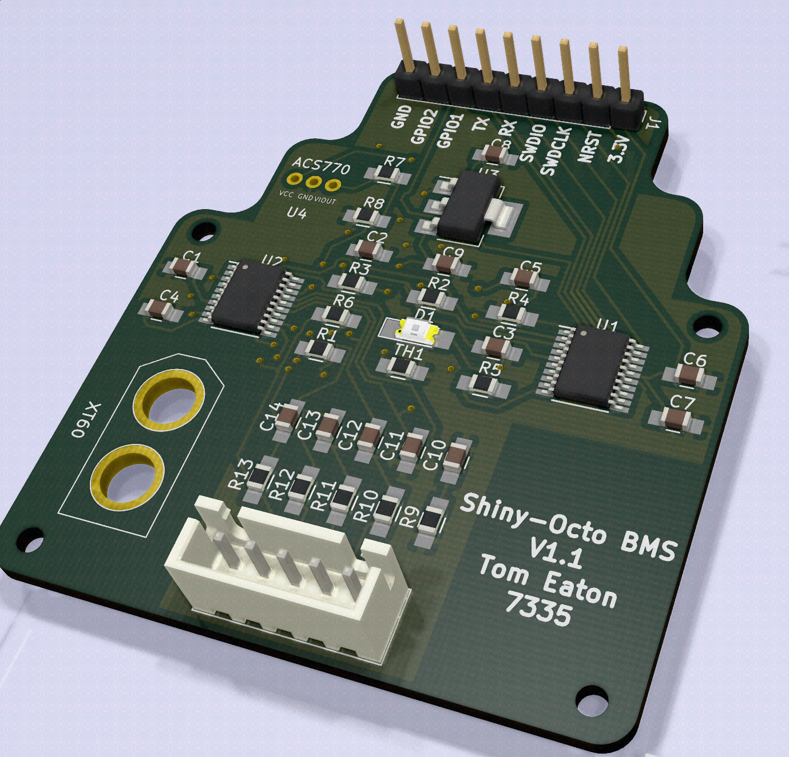
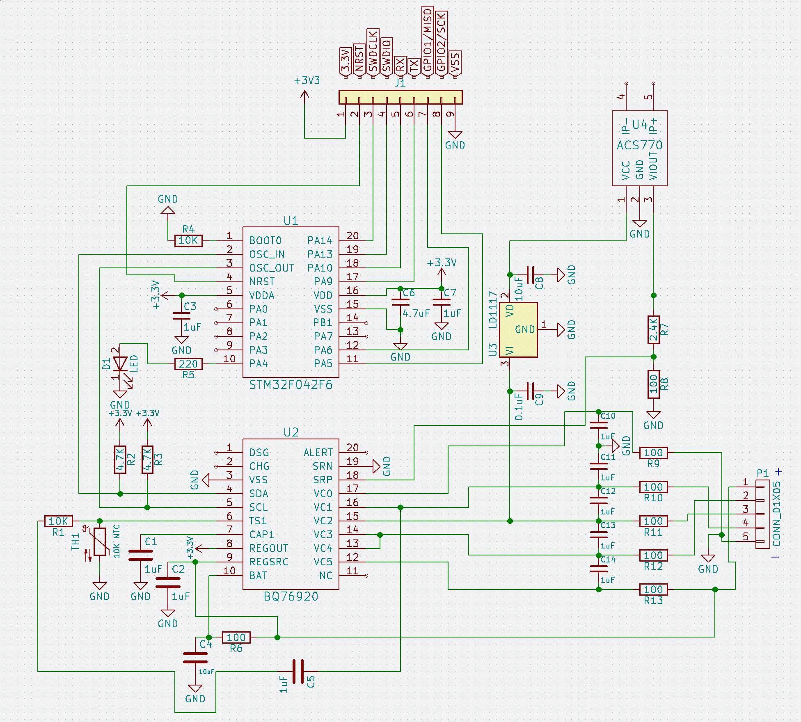
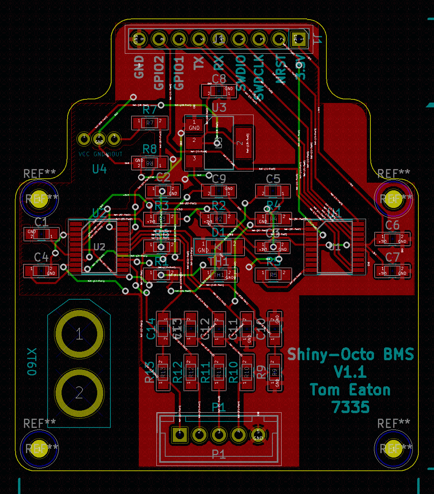

Hello, I am Tom Eaton. I have finished sitting my A Level Maths, Physics and Computer Science at King Edward VI School, Southampton. I am now taking a year out before University, where I am a Junior Aerospace Engineer at LiveLink Technology. Once I have my A Level Grades, I will study Electrical Engineering at University.
Blog
Recent postsInternship
At my internship I have been developing a battery management system (BMS) for LiPo batteries for use on quadcopters. The design has been through many revisions and is current on revision 2.
 This is the second revision of the PCB. It uses the BQ76920 and STM32F04xx microcontroller. Schematics and microcontroller code can be found belowMain microcontroller code   I have written documentation to go along with this project aswell, an example is below. This is an document explaining what the Steinhart-Hart equation is, and how I used it in my project.
Projects
In my free time I like to play around with computers. You can see some of my projects (including this websites source code) on my Github page.
I also like to have ago at interesting Physics or Maths problems. Solutions to these problems can be found below.
Coursework
- Physics Research Briefing - Doppler Echocardiography Review.
- Computer Science Coursework - Projectile Motion Question Generator.
A Level Notes
OCR B Physics notes are currently under construction. Red links have not yet been completed.Contact
Please contact me at tomeaton17@gmail.com